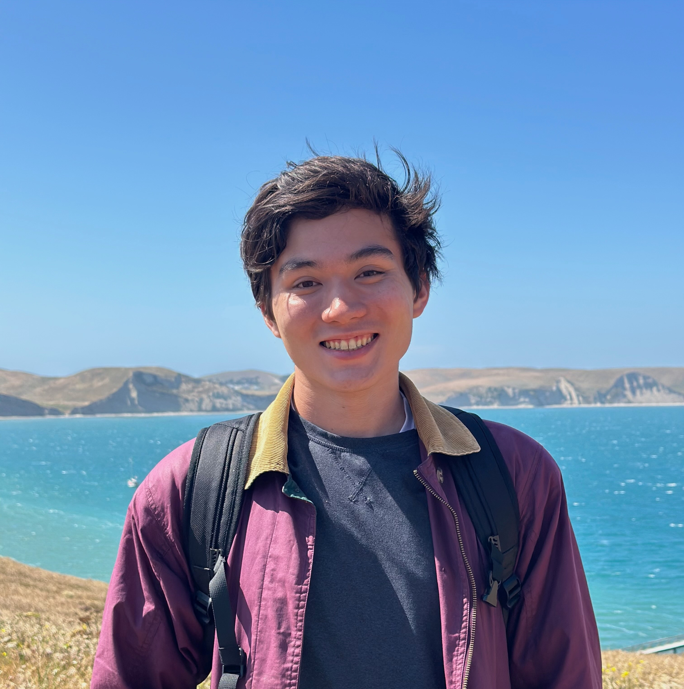

Hi! I'm a second-year Ph.D. student in the Computer Science Department at UT Austin where I'm advised by Scott Aaronson and Nick Hunter-Jones, and supported by the NSF GRFP. My research interests are broadly in quantum information and theoretical computer science. Lately I've been thinking mostly about classical and quantum (one-way) communication complexity and verifiable quantum advantage.
Before starting my Ph.D., I spent a year at Salesforce as a software engineer. I received a B.S. in computer science with minors in applied math and applied physics from Columbia University in 2024, where I was fortunate to be advised by Henry Yuen. While there, I co-founded Columbia University Science Olympiad, which is an organization that hosts an annual Science Olympiad tournament for high school students.
I enjoy staying active through walking, hiking, running, and biking. I'm a nature enthusiast with an enduring appreciation of mountains, oceans, rocks, minerals, fossils, plants, animals, etc. I also like to read all sorts of things.

Email: ryan [dot] anselm [at] utexas [dot] edu